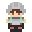

 Red Gate
Details
 |
|
| Playtime | Not Played |
| Last Activity | Never |
| Added | 30/11/2020 21:19:48 |
| Modified | 24/01/2022 23:18:25 |
| Completion Status | Not Played |
| Library | Steam |
| Source | Steam |
| Platform | PC (Windows) |
| Release Date | 20/05/2019 |
| Community Score | 31 |
| Critic Score | |
| User Score | |
| Genre | Action Adventure Early Access Indie Totale |
| Developer | uora |
| Publisher | uora |
| Feature | Single Player |
| Links | Centro comunità Discussioni Guide Notizie Pagina del negozio PCGamingWiki |
| Tag | |
Description
Red Gate is an action adventure game consisting of two parts: This World (battle) and Another World (search) . A story of a soldier who moves back and forth between the two worlds to gain power, defeat powerful enemy forces and save people.


This World (battle)
Defeat powerful enemies and save people. Use your Soul Points and items brought back from that world to gain strength and confront the mighty army. The number of Soul Points earned in that world will increase by the number of saved residents. It saves those who seek help.That World (search)
The purpose here is to get Soul Points from special residents and take them back to the battle part. However, the robot is monitoring. If found, it will be eliminated. From the treasure chest, you can get items that can acquire skills, but you need to use Soul Points to open it. It would be nice to hear what the world is like from residents and animals.Features
- Two worlds: an adventure-like world with various elements, and a world of battle with numerous enemies
- A deep game system that travels back and forth between two interacting worlds.
- Map of handmade 2D dot picture
- A search part that makes full use of various skills and items
- Simple but difficult fighting
- Powerful power obtained by level up
Controles
- WSAD: ↑↓←→
- K: action 1 - attack
- L: action 2 - talk, speciall skill, and other.
- I: Item use
- O: Item select
- Enter: game start